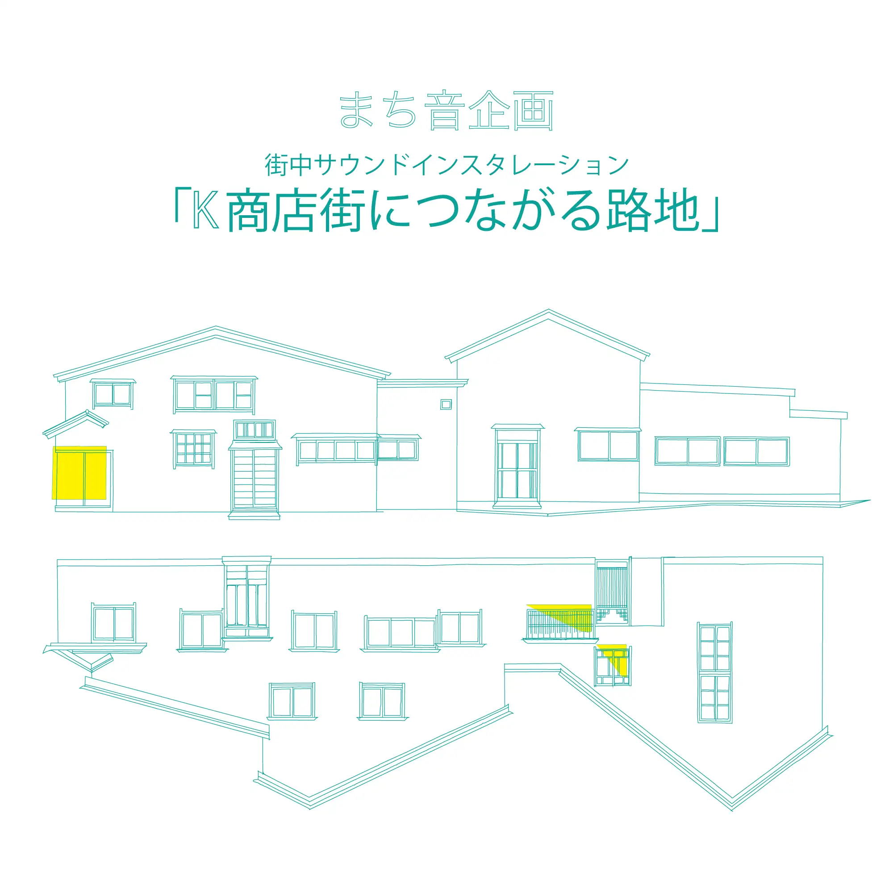
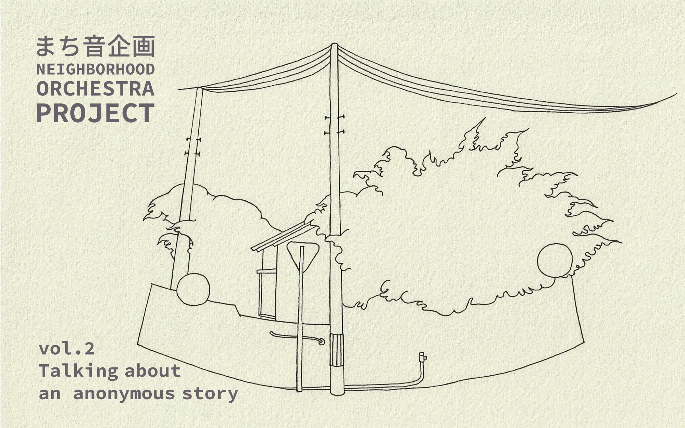

Neighborhood Orchestra Project

the alley to K-shopping street
KANAIWA ONO ART PROJECT, Artist in Residence
21st Century Museum of Contemporary Art, Kanazawa JAPAN

Talking about an anonymous story
KANAIWA ONO ART PROJECT, Artist in Residence
21st Century Museum of Contemporary Art, Kanazawa JAPAN
the alley to K-shopping street
Neighborhood Orchestra Project VOL.1 (Kanaiwa, Kanazawa City)
This project was conducted as part of an artist-in-residence program in the Kanaiwa district of Kanazawa City.
Although the main theme was originally to engage with the local community, the early period of the COVID-19 pandemic in 2020 made such interactions difficult. Nevertheless, we observed the neighborhood and focused on the usually unnoticed landscape and sounds in the absence of people passing by.
The sounds heard were mainly everyday life sounds coming from inside houses, and the sense of human presence came from these domestic sounds together with light spilling out from the windows.
For this project, we borrowed the windows of two houses facing each other along a narrow alley and placed field-recorded sounds from the neighborhood at each window.
We created and presented a sound installation where light flowed out from the windows in response to the sounds.
Talking about an anonymous story
Neighborhood Orchestra Project VOL.2 was conducted with a two-month residency in Kanaiwa, Kanazawa City, where we researched the local neighborhood.
We performed field recordings and landscape sketches, then installed eight sound spots where audio plays automatically when people pass by, thus adding new layers to the existing soundscape of the area.
The audio playback devices are embedded within objects designed to blend seamlessly with the surrounding landscape.
To guide visitors to these sound spots, we created postcards featuring sketches of the installation locations and distributed them via flyer drops to households in the neighborhood. The exact locations are not disclosed, encouraging participants to explore the area using the postcard imagery and enjoy the sound experience as they walk through the neighborhood.